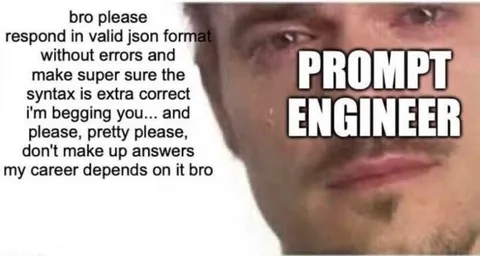

В конце прошлой осени Команда качества поиска одной из первых в Яндексе смогла существенно удешевить сложную асессорскую разметку за счёт генеративной модели. Татьяна Климук, руководитель Службы исследований и качества ранжирования, рассказала, как работали над технологией.
Яндекс использует услуги тысяч асессоров, которые каждый день выполняют десятки тысяч заданий по оценке выдачи с точки зрения качества и релевантности. Это дорогой, долгий и сложный процесс.
Идея проекта в том, чтобы отдать рутинную работу по разметке сильной нейронке. При этом мы не отказываемся от асессоров, а переключаем их на разметку более важных и сложных кейсов, а также поручаем контролировать корректность работы модели.
Архитектура
Мы начали с экспериментов с базовым претрейном от YandexGPT. На вход подавали сжатую инструкцию, запрос и контент документа, на выходе получали решение о принадлежности к одной из категорий релевантности.
Однако промптинг даже SoTA-моделей пока не даёт нужного качества на нестандартных кейсах. Инструкция оказывается для них настолько сложной, что без дообучения ни одна модель не справляется с ней. Поэтому на старте получилось выжать только 55% качества асессоров.
Тогда мы сделали ряд улучшений:
— Взяли претрейн от Нейро, который лучше понимает поисковый домен и легче обучается решать поисковые задачи.
— Обучались не просто на метку класса, но и на подготовленные Chain-of-Thoughts, чтобы научить модель больше думать перед тем, как она даёт ответ.
— Добавили внешние данные — знания, необходимые для понимания контекста, которые нельзя извлечь из текста. Пример таких знаний — то, какие страницы в сети официальные, а какие — нет.
— Подавали данные для обучения в нужном порядке — от более мусорных к более качественным.
Так мы добились качества 102% относительно разметки асессоров, что уже было неплохо. Но оставался риск «сломать» Поиск — поэтому нужно было проверить модель на разных классах запросов, исключить риск деградации со временем и учесть другие нюансы.
Решение
В итоге мы придумали решение, которое использует оценку как от людей, так и от нейросети. Мы стали извлекать из неё не только ответ по инструкции, но ещё и уверенность в этом предсказании. В зависимости от степени уверенности мы принимали решение, использовать ли в задаче человеческий ресурс.
— Если модель уверена в ответе, скорее всего, задача простая и не требует помощи асессоров. С этими кейсами она нередко справляется даже лучше людей. Таких задач оказалось около половины от общей массы.
— Если модель не до конца уверена в ответе, привлекаем её вместо одного из трёх асессоров. Размер этой зоны — около 30%.
— Когда модель говорит, что совсем не уверена в решении, отдаём задачу трём сильным асессорам — как это происходит в стандартном процессе. Таких задач порядка 20%.
Результаты и планы
С помощью этого решения мы получили 105% качества и 60% экономии денег.
Мы уже используем его экспериментально в разметке обучающих и валидационных пулов для моделей ранжирования, но конечный мониторинг интегрального качества поиска пока остаётся на людях.
Планируем продолжать наращивать качество и запускаться на новых разметках. Также в долгосрочных планах — свести процесс к промптингу, когда ты не обучаешь модель, а описываешь задачу текстом. Так мы сможем более гибко менять инструкции разметок без переобучения модели.
Мы рассчитываем, что решение поможет нам перекинуть рутину на нейронки, а людям давать более интересные и сложные задачи.
ML Underhood
